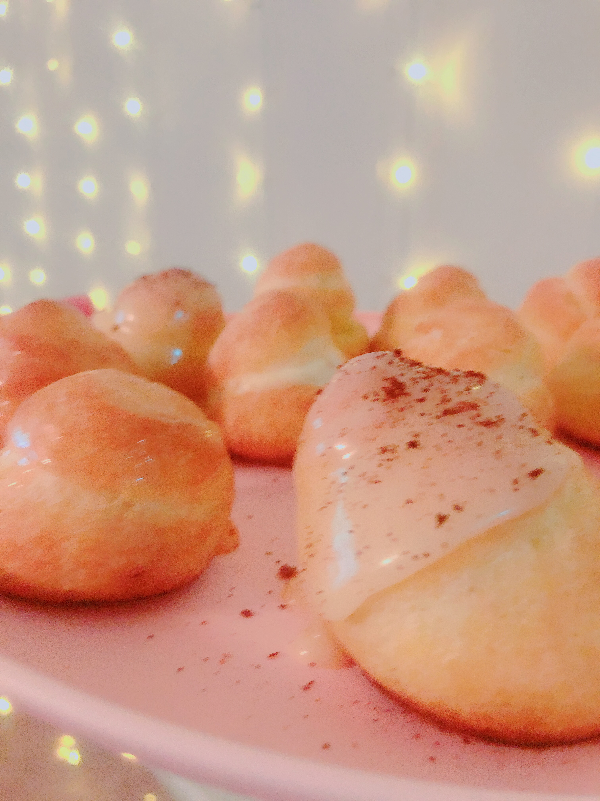

This is my recreation of the creampuffs. I made quite a few mistakes but over all these creampuffs turned out pretty good. Instaed of using whipped cream for the filling, I made a choux pastry. Choux pastry is more of a custard and it is very creamy and rich. I would highly suggest you try out making these at home! It takes a little elbow grease, but overall very worth the trouble.